Forge
Des plug-ins qui ressemblent à du matériel et qui sonnent comme du matériel. Synthés, basses, rythmiques, effets, dynamique et égalisation, voix : tout le catalogue, à prendre avec Forge Studio ou en pack de plug-ins.

Les deux offres
Forge Studio, ou les plug-ins seuls.
Deux façons d’avoir la gamme Forge. Pas d’abonnement, une licence à vie dans les deux cas.
Forge Studio
Le studio, avec toute la gamme Forge dedans.
- Forge Studio : table de mixage, séquenceur par piste, export WAV
- Tous les plug-ins de la gamme Forge inclus, intégrés à l’application
- Les plug-ins Forge aussi en AU et VST3 dans votre logiciel de musique
- Licence à vie, essai de 14 jours
Pas encore en vente : aucun paiement n’est possible pour le moment. TVA non applicable, art. 293 B du CGI
Pack plug-ins Forge
Les plug-ins seuls, sans le studio.
- Tous les plug-ins de la gamme Forge en AU et VST3 pour macOS
- Forge Studio n’est pas compris
- Licence à vie, essai complet de 14 jours, sans compte
- Remboursé sous 30 jours si ça ne marche pas chez vous
Paiement sécurisé par Stripe, clé envoyée par e-mail. Conditions de vente · Remboursement. TVA non applicable, art. 293 B du CGI
Synthés et basses
Des instruments à jouer : synthés polyphoniques, basses, granulaire.
Synthés

NEREID
Synthétiseur à faders · filtre 24 dB

NIMBUS
Synthétiseur de textures · 3 moteurs, enregistreur d'entrée

OBSIDIAN
Synthétiseur polyphonique 8 voix · filtre à variable d'état
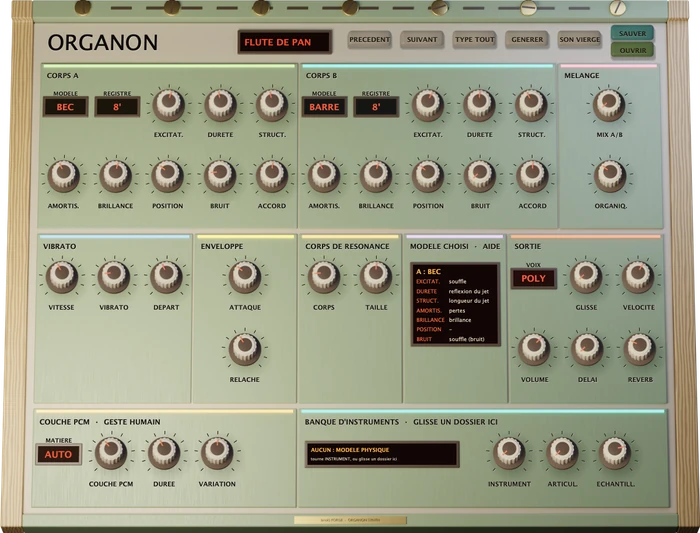
ORGANON
Synthétiseur à modélisation physique · instruments du monde entier

PRISM
Synthétiseur FM · 4 opérateurs, 8 algorithmes

TITAN
Synthétiseur polyphonique bicanal · 8 voix · huit macros

FLUX
Synthé d’effets spéciaux · matière solide, liquide, gazeuse

TETRA
Petit synthé · quatre macros chaotiques
Basses

BASALT
Synthétiseur de basse · 3 oscillateurs, filtre à échelle

VIPER
Synthétiseur à deux filtres en série · modulateur en anneau

ANVIL BASS
Moteur de basse monophonique
Granulaire
Rythmiques
Des boîtes à rythmes à construire, à générer, à jouer au clavier.
Boîtes à rythmes


Effets
Modulation, espace, délais, filtres et distorsions, textures.
Modulation

CARILLON
Modulateur en anneau à diodes

CHOIR
Effet de chœur · 1 à 24 voix

DIMENSION
Chorus de studio à quatre modes

DRIFT
Chorus de synthé vintage
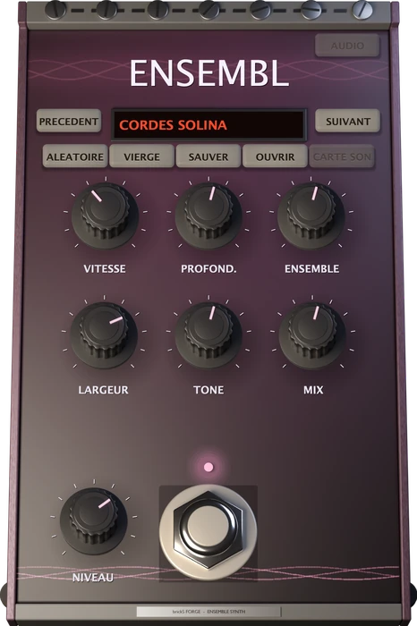
ENSEMBLE
Chorus d'ensemble à cordes
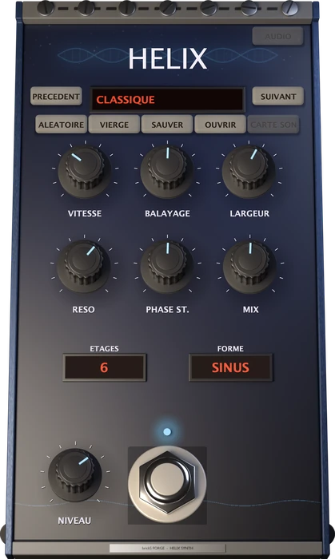
HELIX
Phaseur de 4 à 12 étages

MOSAIC
Réseau de huit filtres à motifs

PETAL
Chorus et vibrato compacts

SWARM
Chorus et flanger à grappe

TWINS
Doubleur de voix

VERTIGO
Pédale stéréo · ping-pong, orbite, essaim
Réverbes

ABYSS
Réverbe de studio · réseau de seize lignes

AURORA
Réverbe de scintillement · octave et quinte

COIL
Réverbe à ressort et delay de bande

LUCID
Réverbe transparente
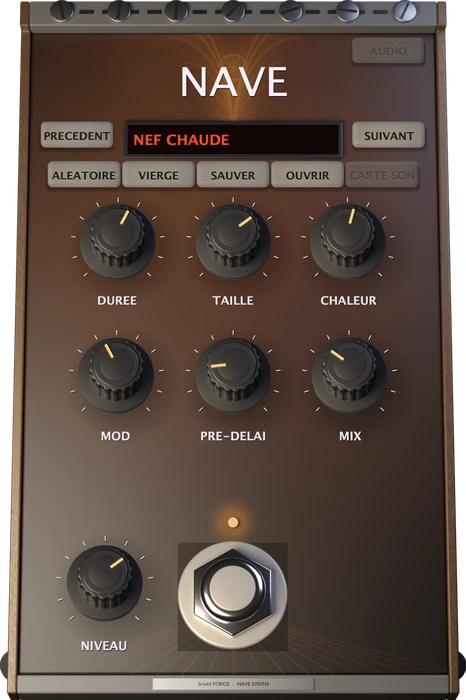
NAVE
Réverbe chaude · grande nef
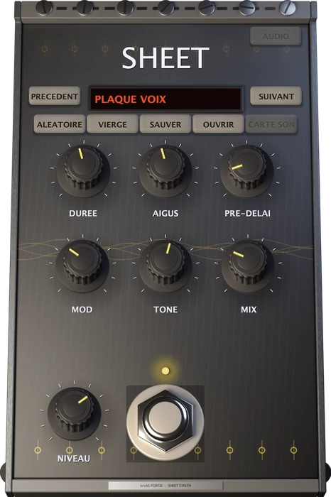
SHEET
Réverbe à plaque
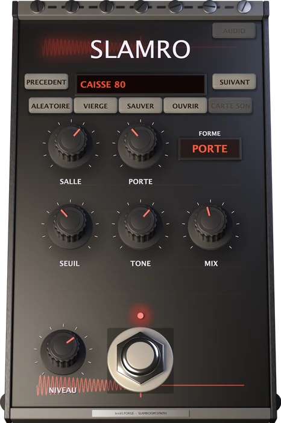
SLAMROOM
Réverbe à porte, inverse et rampe

TIDAL
Réverbe synchronisée au tempo

ZENITH
Réverbe à douze machines
Délais

BUCKET
Delay analogique à puces à seaux

CHRONOS
Delay à douze machines

HORIZON
Delay de studio · 20 ms à 12 s

PEBBLE
Delay analogique compact
Filtres et distorsions
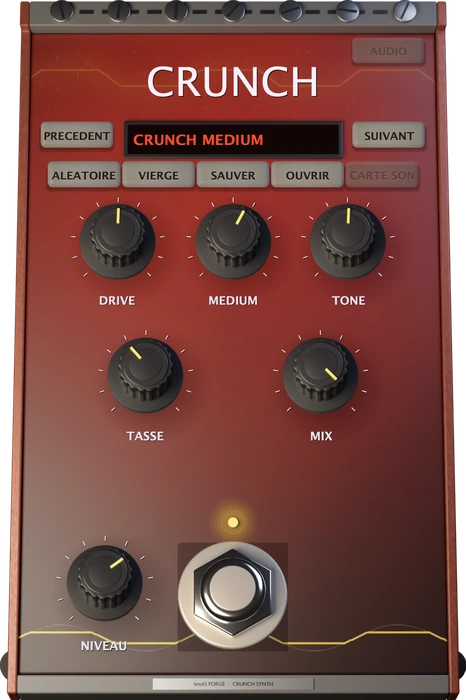
CRUNCH
Overdrive à diodes

FERAL
Oscillateur commandé par le signal
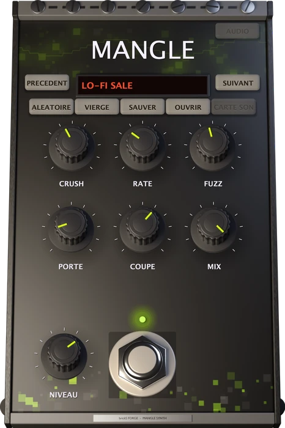
MANGLE
Destruction · crush, fuzz, porte

REEL
Saturation de bande magnétique
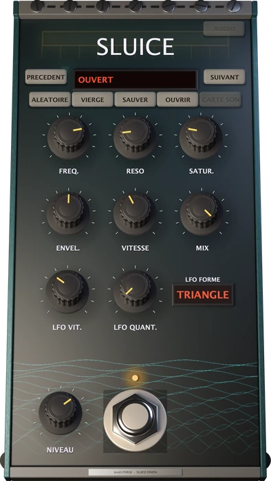
SLUICE
Filtre passe-bas à échelle, à enveloppe

TWIST
Replieur d'onde

WARMTH
Saturation douce · tube, transformateur, bande
Looper et textures

Dynamique et EQ
Compresseurs, limiteurs, égaliseurs et mastering pour tenir un mix.
Compresseurs

CROSSFIRE
Compresseur multibande · 5 bandes

DYNAMO
Compresseur numérique · 8 styles

GRIPPER
Compresseur à VCA

HEAVYWEIGHT
Compresseur à bande et transformateur
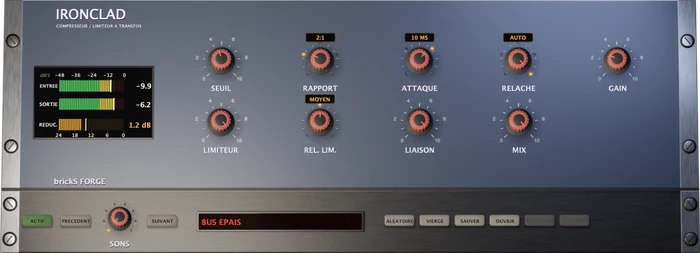
IRONCLAD
Compresseur-limiteur stéréo à transformateurs

LUMEN
Compresseur optique à tubes

MASTERBUS
Compresseur de bus à VCA
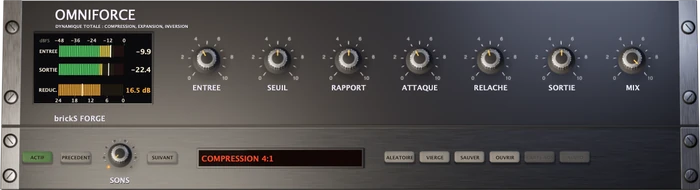
OMNIFORCE
Processeur de dynamique · de l'expansion à l'inversion

PIRANHA
Limiteur-compresseur à FET

RAVAGER
Compresseur à neuf rapports

THRUSTER
Compresseur-limiteur à VCA

TRIODE
Compresseur à mu variable et tubes
Limiteurs

Égaliseurs

CHROMA
Égaliseur à couleurs · 4 bandes
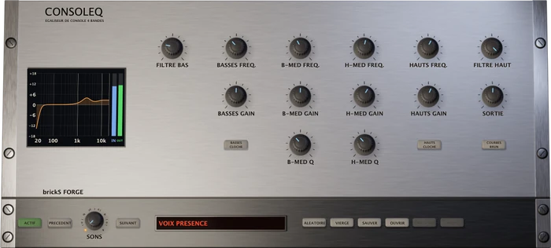
CONSOLEQ
Égaliseur de console · 4 bandes

KALEIDO
Égaliseur à couleurs · 8 bandes

LIFTER
Égaliseur de programme à tubes
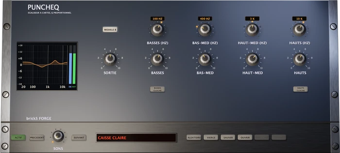
PUNCHEQ
Égaliseur à cartes · Q proportionnel

SURGEON
Égaliseur paramétrique · 6 bandes
Mastering
Voix
Préamplis de micro, du plus propre au plus sale.
Préamplis


Essayer
Téléchargez, essayez 14 jours.
Trois installeurs, un par grande famille. Installez ce qui vous intéresse : tout fonctionne en entier pendant 14 jours, sans compte et sans connexion.
Mac · Apple Silicon et Intel · macOS 10.15 ou plus récent · Audio Unit + VST3.
Questions fréquentes
Que se passe-t-il au bout de 14 jours ?
Le plug-in se tait jusqu’à la saisie d’une clé. Vos projets ne sont pas touchés : dès que la clé est saisie, tout rejoue comme avant.
La clé est-elle à vie ? Sur combien d’ordinateurs ?
À vie, et sur tous les Mac qui vous appartiennent. La vérification se fait sur votre machine, sans connexion Internet.
Faut-il Forge Studio pour utiliser les plug-ins ?
Non : le pack à 14,90 € contient les plug-ins seuls. Chaque plug-in Forge est un plug-in AU et VST3 qui fonctionne dans votre logiciel de musique habituel.
Et Windows ?
Pas pour l’instant : les plug-ins sont des Audio Unit et VST3 pour macOS (Apple Silicon et Intel, macOS 10.15 ou plus récent).